Overview
Models
| model | source |
|---|---|
| model | rapamycin_body_flat.xml |
Datasets
The experiment has no datasets.
Figures (14)

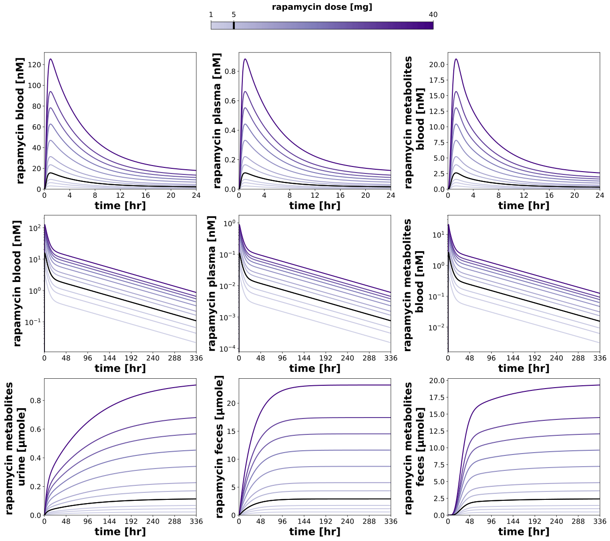

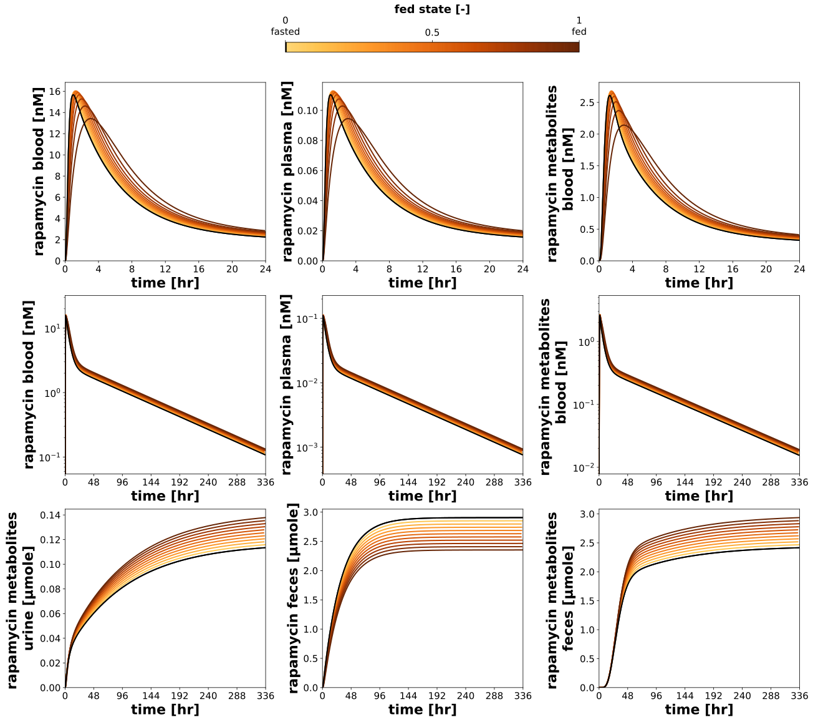

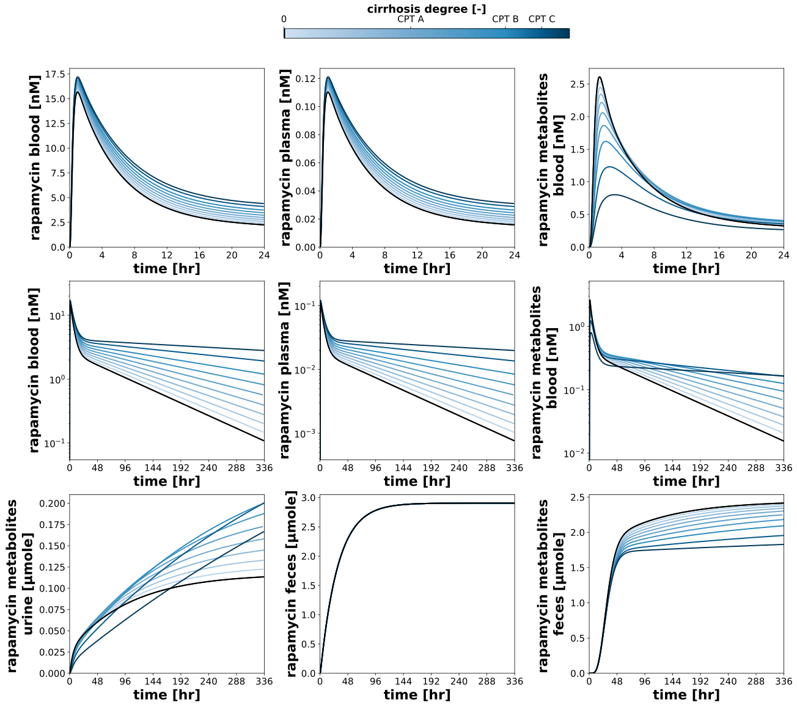

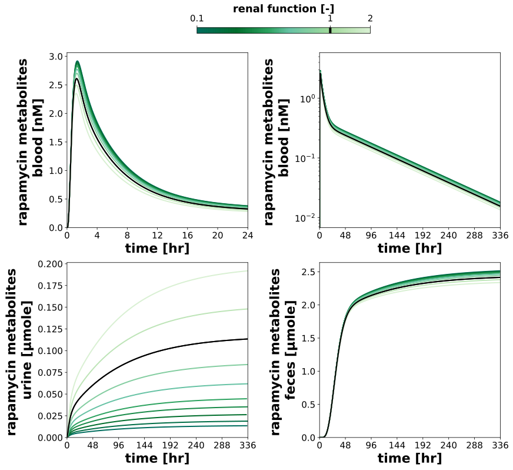

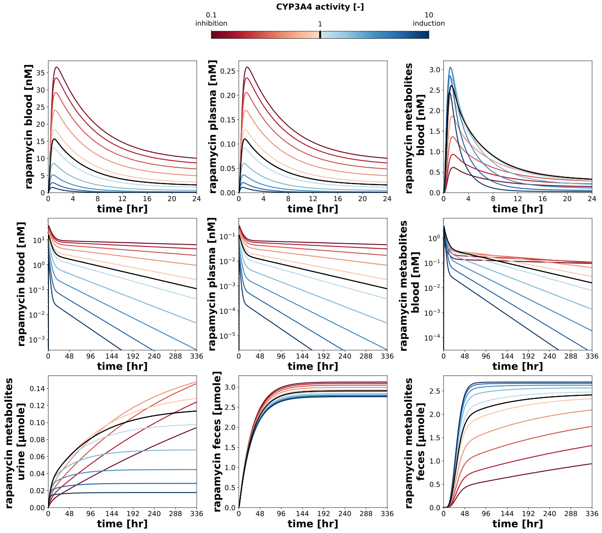

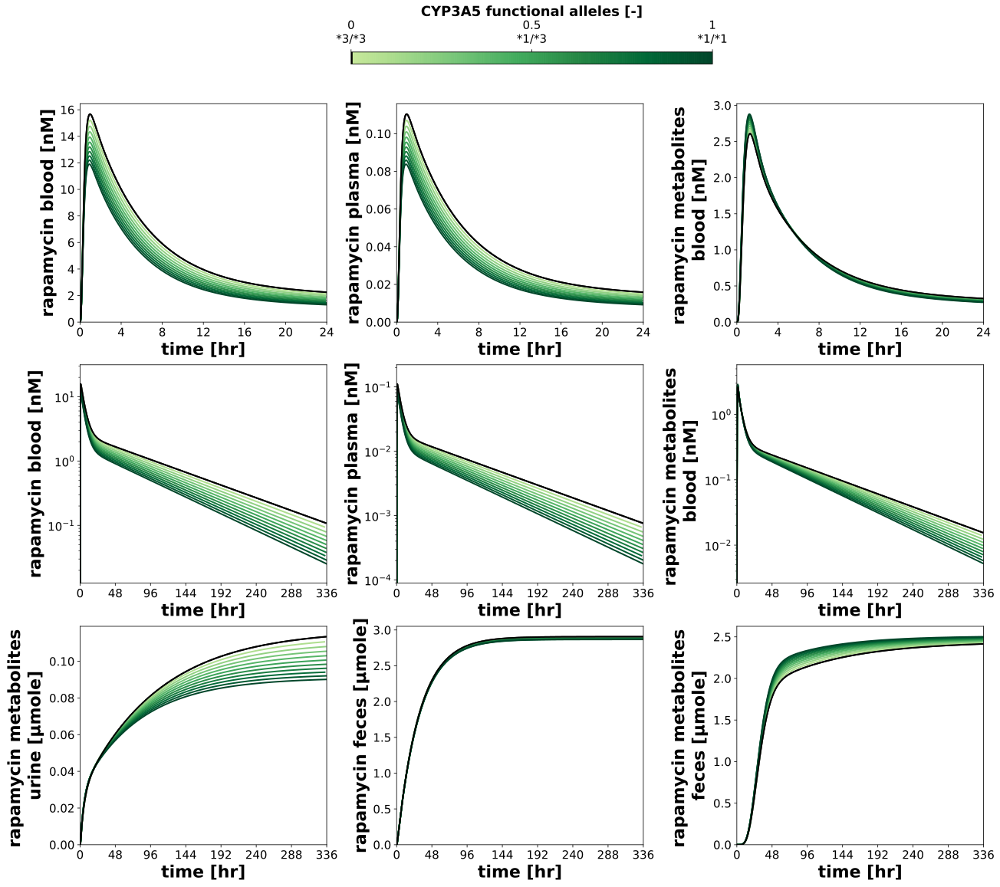

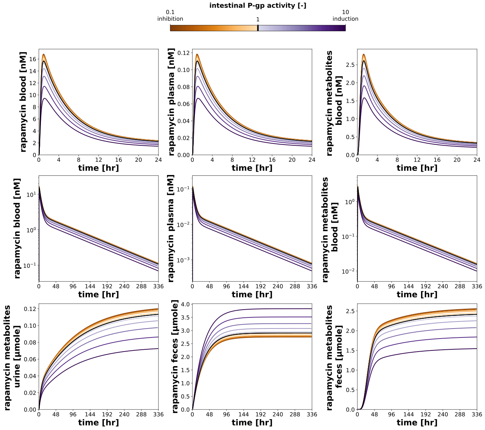

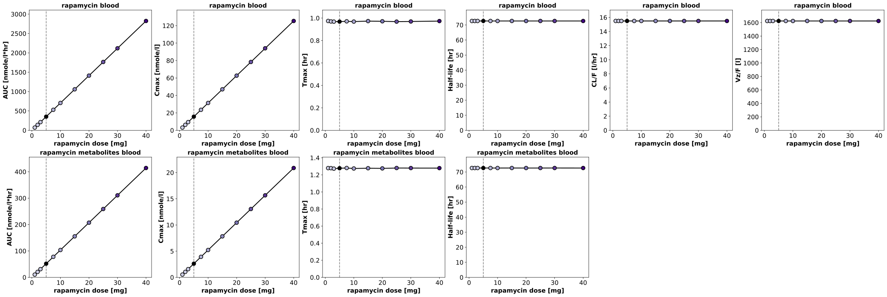

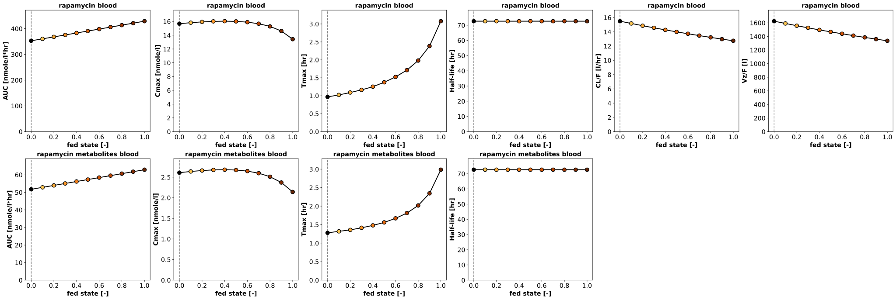

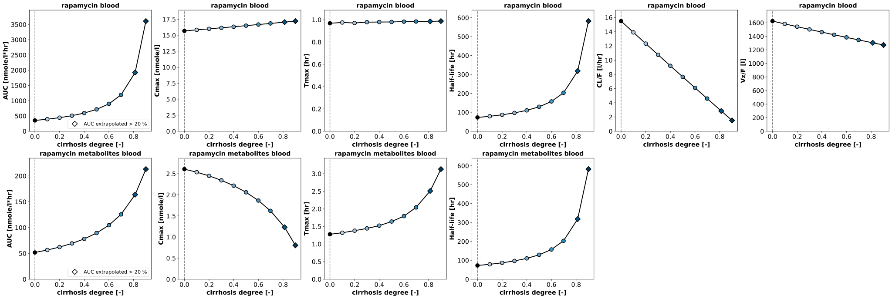

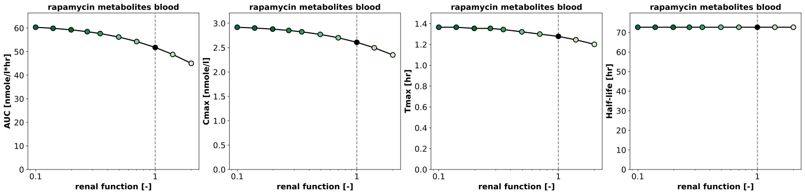

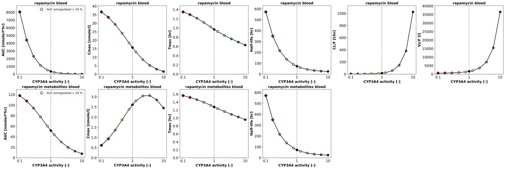

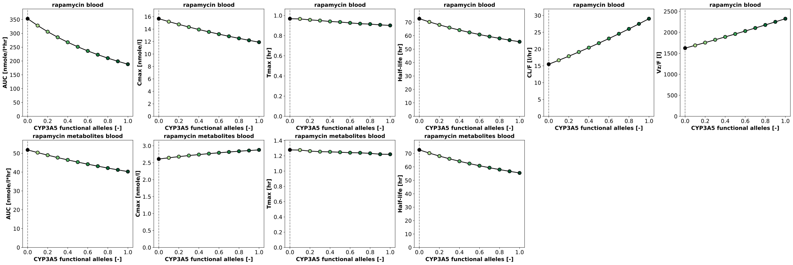

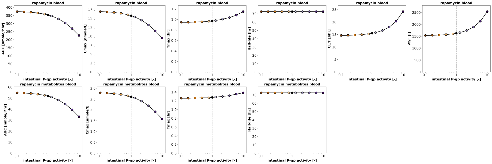
Code
"""Parameter scans rapamycin."""
from collections.abc import Mapping
from typing import Any, ClassVar, NamedTuple, NotRequired, TypedDict, override
import matplotlib
import matplotlib.pyplot as plt
import numpy as np
import pandas as pd
from matplotlib.axes import Axes
from matplotlib.cm import ScalarMappable
from matplotlib.colors import (
Colormap,
LinearSegmentedColormap,
LogNorm,
Normalize,
to_hex,
)
from matplotlib.lines import Line2D
from matplotlib.ticker import FuncFormatter
from matplotlib.typing import ColorType
from pkpdsim.scan import point_band, point_timecourse, scan_dimensions, start_values
from sbmlsim import Q
from sbmlsim.plot.serialization_matplotlib import FigureMPL
from sbmlsim.result import ScanResult
from sbmlsim.simulation import Dimension, Scan, Simulation
from sbmlsim.units import Quantity
from pkdb_models.models.rapamycin import MODEL
from pkdb_models.models.rapamycin.experiments.base_experiment import (
RapamycinSimulationExperiment,
)
from pkdb_models.models.rapamycin.rapamycin_pk import summarize
class ScanSpec(TypedDict):
"""Definition of a single parameter scan.
The parameters are scanned together, with the same values (e.g. the
activity of CYP3A4 in the intestine and in the liver); the first one is
the x axis of the figures.
"""
parameters: tuple[str, ...]
default: float
range: np.ndarray
scale: str
units: str
label: str
#: the colormap, a matplotlib colormap or the colors at positions from 0
#: to 1 along the range
colormap: str | list[tuple[float, str]]
#: the labels of the ticks of the colorbar, the minimum, the default and
#: the maximum of the range without
ticks: NotRequired[dict[float, str]]
#: only the metabolites depend on the parameter
metabolites_only: NotRequired[bool]
class Panel(NamedTuple):
"""A panel of the timecourses of a scan."""
sid: str
#: the end of the time axis [hr]
tend: float
#: the distance of the ticks of the time axis [hr]
tick: float
#: a logarithmic axis
log: bool
def _position(value: float, vmin: float, vmax: float) -> float:
"""Get the position of a value on a logarithmic axis from vmin to vmax."""
return float((np.log10(value) - np.log10(vmin)) / (np.log10(vmax) - np.log10(vmin)))
def _with(values: np.ndarray, *extra: float) -> np.ndarray:
"""Get the sorted values of a scan with the values `extra` added."""
return np.unique(np.concatenate([values, np.asarray(extra, dtype=float)]))
_CIRRHOSIS = RapamycinSimulationExperiment.cirrhosis_map
_CIRRHOSIS_COLORS = RapamycinSimulationExperiment.cirrhosis_colors
_RENAL = RapamycinSimulationExperiment.renal_map
_RENAL_COLORS = RapamycinSimulationExperiment.renal_colors
#: the diverging colormaps, whose light center is left out
_DIVERGING = {"RdBu", "PuOr"}
class RapamycinParameterScan(RapamycinSimulationExperiment):
"""Scan the effect of parameters on the pharmacokinetics of an oral dose.
A single oral dose of 5 mg rapamycin, simulated for 28 days: the terminal
half-life is 60 hr, and about 150 hr at the strongest CYP3A4 inhibition
and cirrhosis of the scans, where 38 % of the AUC remain after 14 days and
8 % after 28 days. The figures show the first day and the 14 days after
the dose, rapamycin in whole blood (the readout of the studies) and plasma,
its metabolites and their excretion, and the pharmacokinetic parameters of
the non-compartmental analysis (`rapamycin_pk`) of rapamycin in whole
blood and of the metabolites over the scanned parameter.
In a run over the draws of the fitted parameters (`run_simulation
pkdb_models.models.rapamycin --uncertainty`) every point of a scan is
simulated for every draw; the figures draw the median of the draws with
the band of their quantiles.
"""
#: the end of the simulations [hr], 28 days
tend = 28 * 24
#: the end of the timecourses of the first day and of the later phase
#: [hr]; the scan is simulated to `tend` for the pharmacokinetic parameters
tend_day = 24
tend_plot = 14 * 24
#: the output times of a run over the draws [hr]: every 0.05 hr in the
#: first day (absorption and maximum, tmax about 1 hr), every hour after
#: it. The grid of `steps` for every draw of every point would need about
#: 13 GB, this grid 1.1 GB.
times_uncertainty: ClassVar[tuple[float, ...]] = tuple(
np.unique(
np.concatenate([np.linspace(0, 24, 481), np.linspace(24, tend, 649)])
).tolist()
)
#: the decades of the logarithmic axes of the concentrations: an
#: induction of CYP3A4 lowers rapamycin by eight decades in 14 days, far
#: below a limit of quantification
log_decades = 5
#: the oral dose of the scans [mg]
dose_rap = 5
#: the opacity of the bands of the draws of the fitted parameters
band_alpha = 0.15
#: the share of the AUC which is extrapolated above which the analysis of
#: a point is marked
auc_extrap_warning = 0.2
#: the variables of the figures and of the pharmacokinetic parameters
selections = (
"time",
"PODOSE_rap",
"[Cveblood_rap]",
"[Cveplasma_rap]",
"[Cve_rx]",
"Aurine_rx",
"Afeces_rap",
"Afeces_rx",
"f_cirrhosis",
"KI__f_renal_function",
"GU__fed",
"GU__f_pg",
"GU__f_cyp3a4",
"LI__f_cyp3a4",
"GU__f_cyp3a5",
"LI__f_cyp3a5",
)
#: the concentrations of the timecourses, rapamycin in whole blood first
concentrations: ClassVar[tuple[str, ...]] = (
"[Cveblood_rap]",
"[Cveplasma_rap]",
"[Cve_rx]",
)
#: the excreted amounts of the timecourses
amounts: ClassVar[tuple[str, ...]] = ("Aurine_rx", "Afeces_rap", "Afeces_rx")
#: the pharmacokinetic parameters of the analytes of `rapamycin_pk`
pk_parameters: ClassVar[dict[str, tuple[str, ...]]] = {
"rap": ("auc_inf_obs", "cmax", "tmax", "thalf", "cl_f", "vz_f"),
"rx": ("auc_inf_obs", "cmax", "tmax", "thalf"),
}
pk_names: ClassVar[dict[str, str]] = {
"rap": "rapamycin blood",
"rx": "rapamycin metabolites blood",
}
pk_labels: ClassVar[Mapping[str, str]] = {
"auc_inf_obs": "AUC",
"cmax": "Cmax",
"tmax": "Tmax",
"thalf": "Half-life",
"cl_f": "CL/F",
"vz_f": "Vz/F",
}
pk_units: ClassVar[Mapping[str, str]] = {
"auc_inf_obs": "nmole/l*hr",
"cmax": "nmole/l",
"tmax": "hr",
"thalf": "hr",
"cl_f": "l/hr",
"vz_f": "l",
}
num_points = 10
scan_map: ClassVar[dict[str, ScanSpec]] = {
"dose_scan": {
"parameters": ("PODOSE_rap",),
"default": dose_rap,
# the doses of the studies
"range": np.array([1, 2, 3, 5, 7.5, 10, 15, 20, 25, 30, 40]),
"scale": "linear",
"units": "mg",
"label": "rapamycin dose [mg]",
"colormap": "Purples",
},
"food_scan": {
"parameters": ("GU__fed",),
"default": 0.0,
# fasted (0) to a high fat meal (1)
"range": np.linspace(0, 1, num=11),
"scale": "linear",
"units": "dimensionless",
"label": "fed state [-]",
"colormap": "YlOrBr",
"ticks": {0.0: "0\nfasted", 0.5: "0.5", 1.0: "1\nfed"},
},
"hepatic_scan": {
"parameters": ("f_cirrhosis",),
"default": 0.0,
# with the degrees of the Child-Pugh classes
"range": _with(
np.array([0, 0.1, 0.2, 0.3, 0.5, 0.6, 0.9]), *_CIRRHOSIS.values()
),
"scale": "linear",
"units": "dimensionless",
"label": "cirrhosis degree [-]",
# the colors of the classes at their degrees (of 0 to 0.9)
"colormap": [
(0.0, "#d0e1f2"),
*(
(_CIRRHOSIS[key] / 0.9, _CIRRHOSIS_COLORS[key])
for key in (
"Mild cirrhosis",
"Moderate cirrhosis",
"Severe cirrhosis",
)
),
(1.0, "#023858"),
],
"ticks": {
0.0: "0",
_CIRRHOSIS["Mild cirrhosis"]: "CPT A",
_CIRRHOSIS["Moderate cirrhosis"]: "CPT B",
_CIRRHOSIS["Severe cirrhosis"]: "CPT C",
},
},
"renal_scan": {
"parameters": ("KI__f_renal_function",),
"default": 1.0,
# 0.1 to 2, with the limits of the classes of the GFR
"range": _with(
np.array([0.1, 0.14, 0.27, 0.7, 1.4, 2.0]),
*(v for k, v in _RENAL.items() if k != "End stage renal disease"),
),
"scale": "log",
"units": "dimensionless",
"label": "renal function [-]",
# the colors of the classes at their renal function (of 0.1 to 2),
# light greens for a normal and an increased renal function
"colormap": [
(0.0, _RENAL_COLORS["End stage renal disease"]),
*(
(_position(_RENAL[key], 0.1, 2), _RENAL_COLORS[key])
for key in (
"Severe renal impairment",
"Moderate renal impairment",
"Mild renal impairment",
)
),
(_position(1.0, 0.1, 2), "#a1d99b"),
(1.0, "#d9f0d3"),
],
"ticks": {0.1: "0.1", 1.0: "1", 2.0: "2"},
# rapamycin is not excreted by the kidneys
"metabolites_only": True,
},
"cyp3a4_scan": {
"parameters": ("GU__f_cyp3a4", "LI__f_cyp3a4"),
"default": 1.0,
# inhibition (< 1) and induction (> 1), intestine and liver
"range": _with(np.logspace(-1, 1, num=num_points), 1.0),
"scale": "log",
"units": "dimensionless",
"label": "CYP3A4 activity [-]",
"colormap": "RdBu",
"ticks": {0.1: "0.1\ninhibition", 1.0: "1", 10.0: "10\ninduction"},
},
"cyp3a5_scan": {
"parameters": ("GU__f_cyp3a5", "LI__f_cyp3a5"),
"default": 0.0,
# the fraction of functional alleles, *3/*3 (0) to *1/*1 (1),
# intestine and liver
"range": np.linspace(0, 1, num=11),
"scale": "linear",
"units": "dimensionless",
"label": "CYP3A5 functional alleles [-]",
"colormap": "YlGn",
"ticks": {0.0: "0\n*3/*3", 0.5: "0.5\n*1/*3", 1.0: "1\n*1/*1"},
},
"pgp_scan": {
"parameters": ("GU__f_pg",),
"default": 1.0,
"range": _with(np.logspace(-1, 1, num=num_points), 1.0),
"scale": "log",
"units": "dimensionless",
"label": "intestinal P-gp activity [-]",
"colormap": "PuOr",
"ticks": {0.1: "0.1\ninhibition", 1.0: "1", 10.0: "10\ninduction"},
},
}
@override
def simulations(self) -> dict[str, Scan]:
scans = {}
grid: dict[str, Any] = (
{} if self.uncertainty is None else {"times": self.times_uncertainty}
)
for scan_key, scan_data in self.scan_map.items():
# the simulation does not set what the dimension scans (the dose
# of the dose scan), the dimension would replace it
preinit_changes = {
**self.default_changes(),
"PODOSE_rap": Q(self.dose_rap, "mg"),
}
for parameter in scan_data["parameters"]:
preinit_changes.pop(parameter, None)
scans[f"scan_po_{scan_key}"] = Scan(
simulation=Simulation(
time_unit="hr",
end=self.tend,
preinit_changes=preinit_changes,
**grid,
),
dimensions=[
Dimension(
"dim_scan",
values={
parameter: Q(scan_data["range"], scan_data["units"])
for parameter in scan_data["parameters"]
},
),
],
)
return scans
def _across(self) -> str | None:
"""Get the dimension of the draws of the fitted parameters, `None` without."""
return None if self.uncertainty is None else self.uncertainty.id
def _scanned(self, res: ScanResult, parameter_id: str) -> Quantity:
"""Get the values of the scanned parameter at the points of the scan."""
values = start_values(res, parameter_id)
across = self._across()
if across is not None:
values = values.isel({across: 0})
return Q(values.values, res.units[parameter_id])
def _colormap(self, scan: ScanSpec) -> tuple[Colormap, Normalize]:
"""Get the colormap of a scan and the normalization of its values.
The scans of the cirrhosis and of the renal function have the colors
of the classes of the impairments (`pkpdsim.impairment`) at the values
of the classes. The colormaps of matplotlib leave out their lightest
colors, so that every curve is visible on white: the start of a
sequential colormap, the center of a diverging one.
"""
rmin, rmax = float(scan["range"][0]), float(scan["range"][-1])
colormap = scan["colormap"]
if isinstance(colormap, str):
base = matplotlib.colormaps[colormap]
positions = (
np.concatenate([np.linspace(0, 0.4, 128), np.linspace(0.6, 1, 128)])
if colormap in _DIVERGING
else np.linspace(0.3, 1.0, 256)
)
cmap: Colormap = LinearSegmentedColormap.from_list(
f"{colormap}_visible", [base(v) for v in positions]
)
else:
cmap = LinearSegmentedColormap.from_list("impairment", colormap)
if scan["scale"] == "linear":
return cmap, Normalize(vmin=rmin, vmax=rmax, clip=False)
return cmap, LogNorm(vmin=rmin, vmax=rmax, clip=False)
def _timecourse(
self,
ax: Axes,
res: ScanResult,
panel: Panel,
point: dict[str, int],
color: ColorType,
) -> tuple[np.ndarray, np.ndarray, float, float]:
"""Draw the timecourse of a point of a scan with the band of its draws.
Returns:
The time and the values (the median of the draws in a run over
them) until the end of the panel, and the lowest value at the end
of the panel and the highest value, of the band in a run over the
draws.
"""
sid = panel.sid
run = self.uncertainty
if run is None:
time, values = point_timecourse(res, sid, **point)
lower = upper = values
else:
time, lower, values, upper = point_band(
res, sid, across=run.id, quantiles=run.quantiles, **point
)
t = Q(time, res.units["time"]).to(self.units["time"]).magnitude
shown = t <= panel.tend
def convert(v: np.ndarray) -> np.ndarray:
"""Get the values until the end of the panel in the unit of the figure."""
return Q(v[shown], res.units[sid]).to(self.units[sid]).magnitude
c, c_lower, c_upper = convert(values), convert(lower), convert(upper)
if run is not None:
ax.fill_between(
t[shown],
c_lower,
c_upper,
color=color,
alpha=self.band_alpha,
linewidth=0,
)
ax.plot(t[shown], c, color=color, linewidth=2.0)
return t[shown], c, float(c_lower[-1]), float(np.max(c_upper))
def _panels(self, scan: ScanSpec) -> tuple[list[Panel], int]:
"""Get the panels of the timecourses of a scan and the number of columns.
The concentrations in the first day (linear) and in the 14 days after
the dose (logarithmic), the excreted amounts in the 14 days; only the
metabolites for a parameter which only they depend on.
"""
concentrations = list(self.concentrations)
amounts = list(self.amounts)
if scan.get("metabolites_only", False):
concentrations = ["[Cve_rx]"]
amounts = ["Aurine_rx", "Afeces_rx"]
panels = [
*(Panel(sid, self.tend_day, 4, log=False) for sid in concentrations),
*(Panel(sid, self.tend_plot, 48, log=True) for sid in concentrations),
*(Panel(sid, self.tend_plot, 48, log=False) for sid in amounts),
]
return panels, 2 if len(concentrations) == 1 else 3
@override
def figures_mpl(self) -> dict[str, FigureMPL]:
"""Matplotlib figures."""
# the pharmacokinetic parameters, per draw in a run over the draws
self.pk_dfs = self.calculate_rapamycin_pk()
return {
**self._figures_mpl_timecourses(),
**self._figures_mpl_pharmacokinetics(),
}
def _colorbar(self, f: FigureMPL, axes: np.ndarray, scan: ScanSpec) -> None:
"""Draw the colorbar of a scan above its panels, the default in black."""
cmap, norm = self._colormap(scan)
cbar = f.colorbar(
ScalarMappable(norm=norm, cmap=cmap),
ax=axes.ravel().tolist(),
location="top",
shrink=0.4,
aspect=30,
)
# the gradient as vector cells: matplotlib rasterizes it into an
# embedded image, which some SVG viewers do not show; the edges of
# the cells in their color close the seams between them
if cbar.solids is not None:
cbar.solids.set_rasterized(False)
cbar.solids.set_edgecolor("face")
rmin, rmax = float(scan["range"][0]), float(scan["range"][-1])
ticks = scan.get(
"ticks",
{value: f"{value:g}" for value in sorted({rmin, rmax, scan["default"]})},
)
cbar.ax.minorticks_off()
cbar.set_ticks(list(ticks), labels=list(ticks.values()))
cbar.ax.tick_params(labelsize=self.tick_font_size)
cbar.ax.axvline(x=scan["default"], color="black", linewidth=4)
cbar.set_label(scan["label"], size=self.tick_font_size + 3, weight="bold")
def _figures_mpl_timecourses(self) -> dict[str, FigureMPL]:
"""Timecourses of the variables for the values of every scan.
The default of the scanned parameter is black and drawn on top; the
axes include the bands of the draws.
"""
figures = {}
for scan_key, scan_data in self.scan_map.items():
panels, ncols = self._panels(scan_data)
nrows = len(panels) // ncols
cmap, norm = self._colormap(scan_data)
f, axes = plt.subplots(
nrows=nrows,
ncols=ncols,
figsize=(6 * ncols, 5 * nrows + 1),
dpi=150,
layout="constrained",
squeeze=False,
)
res = self.results[f"task_scan_po_{scan_key}"]
(scandim,) = scan_dimensions(res, self._across())
par_vec = self._scanned(res, scan_data["parameters"][0]).magnitude
for ax, panel in zip(axes.flatten(), panels, strict=True):
bottom, top = np.inf, 0.0
default: tuple[np.ndarray, np.ndarray] | None = None
for k_par, par in enumerate(par_vec):
is_default = bool(np.isclose(scan_data["default"], par))
color = "black" if is_default else cmap(norm(par))
t, c, end, cmax = self._timecourse(
ax, res, panel, {scandim: k_par}, color
)
top = max(top, cmax)
if end > 0:
bottom = min(bottom, end)
if is_default:
default = (t, c)
# the default on top
if default is not None:
ax.plot(*default, color="black", linewidth=2.0)
ax.set_xlim(0, panel.tend)
ax.set_xticks(np.arange(0, panel.tend + 1, panel.tick))
if panel.log and np.isfinite(bottom):
# from the lowest value at the end to the highest value,
# at most `log_decades` below it
ax.set_yscale("log")
ax.set_ylim(
max(0.5 * bottom, 10.0 ** (-self.log_decades) * top),
2.0 * top,
)
else:
ax.set_ylim(0, 1.05 * top if top > 0 else 1.0)
ax.set_xlabel(
f"{self.label_time} [{self.units['time']}]", fontdict=self.font
)
ax.set_ylabel(
f"{self.labels[panel.sid]} [{self.units[panel.sid]}]",
fontdict=self.font,
)
ax.tick_params(axis="both", labelsize=self.tick_font_size)
self._colorbar(f, axes, scan_data)
figures[f"timecourse__{scan_key}"] = f
return figures
def _summary(
self, df: pd.DataFrame, key: str, unit: str, target: str
) -> tuple[Quantity, Quantity, Quantity]:
"""Get a parameter at the points of a scan, the median and the band of the draws.
Returns:
The values (the median of the draws in a run over them), and the
lower and the upper quantile, the values without draws.
"""
run = self.uncertainty
if run is None:
values = Q(df[key].to_numpy(dtype=float), unit).to(target)
return values, values, values
summary = summarize(df, key, run.quantiles)
median, lower, upper = (
Q(summary[column].to_numpy(), unit).to(target)
for column in ["median", "lower", "upper"]
)
return median, lower, upper
def _figures_mpl_pharmacokinetics(self) -> dict[str, FigureMPL]:
"""Pharmacokinetic parameters over the scanned parameter.
A row per analyte, rapamycin in whole blood and its metabolites. A
point whose AUC is extrapolated by more than `auc_extrap_warning` (in
a run over the draws in any draw) is a diamond.
"""
figures = {}
ncols = max(len(keys) for keys in self.pk_parameters.values())
for scan_key, scan_data in self.scan_map.items():
substances = (
["rx"] if scan_data.get("metabolites_only", False) else ["rap", "rx"]
)
cmap, norm = self._colormap(scan_data)
f, axes = plt.subplots(
nrows=len(substances),
ncols=ncols,
figsize=(5 * ncols, 5 * len(substances)),
dpi=150,
layout="constrained",
squeeze=False,
)
sim_key = f"scan_po_{scan_key}"
res = self.results[f"task_{sim_key}"]
df_all = self.pk_dfs[sim_key]
x = self._scanned(res, scan_data["parameters"][0]).magnitude
for krow, substance in enumerate(substances):
df = df_all[df_all.substance == substance]
warning = (
(df["auc_extrap_fraction"] > self.auc_extrap_warning)
.groupby(df["point"])
.any()
.to_numpy()
)
keys = self.pk_parameters[substance]
for k, ax in enumerate(axes[krow]):
if k >= len(keys):
ax.set_visible(False)
continue
pk_key = keys[k]
y, y_lower, y_upper = self._summary(
df,
pk_key,
df[f"{pk_key}_unit"].iloc[0],
self.pk_units[pk_key],
)
ax.axvline(
x=scan_data["default"], color="grey", linestyle="--", zorder=1
)
if self.uncertainty is not None:
ax.fill_between(
x,
y_lower.magnitude,
y_upper.magnitude,
color="black",
alpha=self.band_alpha,
linewidth=0,
)
ax.plot(x, y.magnitude, color="black", linewidth=2.0, zorder=2)
# the default black, as in the timecourses
colors = np.array(
[
"black"
if np.isclose(v, scan_data["default"])
else to_hex(cmap(norm(v)))
for v in x
]
)
for marker, points in (("o", ~warning), ("D", warning)):
ax.scatter(
x[points],
y.magnitude[points],
s=80,
marker=marker,
c=colors[points],
edgecolors="black",
linewidths=1.5,
zorder=3,
)
ax.set_xscale(scan_data["scale"])
if scan_data["scale"] == "log":
# 0.1, 1 and 10 instead of the powers of ten
ax.xaxis.set_major_formatter(
FuncFormatter(lambda value, _: f"{value:g}")
)
ax.set_ylim(0, 1.1 * float(np.nanmax(y_upper.magnitude)))
ax.set_xlabel(scan_data["label"], fontdict=self.scan_font)
ax.set_ylabel(
f"{self.pk_labels[pk_key]} [{self.pk_units[pk_key]}]",
fontdict=self.scan_font,
)
ax.set_title(self.pk_names[substance], fontdict=self.scan_font)
ax.tick_params(axis="both", labelsize=self.tick_font_size)
if k == 0 and warning.any():
ax.legend(
handles=[
Line2D(
[0],
[0],
marker="D",
linestyle="",
markerfacecolor="white",
markeredgecolor="black",
markeredgewidth=1.5,
markersize=9,
label=(
"AUC extrapolated > "
f"{100 * self.auc_extrap_warning:g} %"
),
)
],
loc="best",
fontsize=self.tick_font_size - 3,
)
figures[f"pk_{scan_key}"] = f
return figures
if __name__ == "__main__":
MODEL.run_experiments(
RapamycinParameterScan, output_dir=RapamycinParameterScan.__name__
)